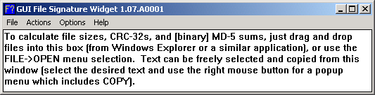
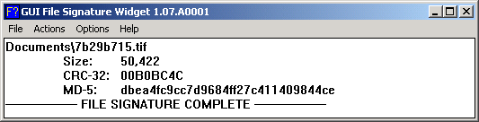
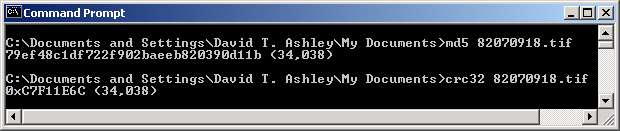

MD5 And CRC-32 Calculation Utilities For Windows (Similar To Unix "md5sum -b")
Both the graphical and console-mode utilities supplied on this page are also included in the ESRG Tool Set download, but it is far quicker and easier to just grab one or both utilities here.
Both utilities were created using Microsoft Visual C++ 6.0, and have no external dependencies (no .DLL dependencies, for example). They should run on any Windows 95 or later system.
Both utilities calculate the MD5 message digest only in "binary" mode (i.e. "md5sum -b" in Unix). This is the mode which is used in calculating the MD5 message digest accompanying downloads.
The graphical version of the utility presents a graphical interface

and one may then either select files using drag'n'drop or the File manu. The utility will then calculate the MD5 message digest and CRC-32 of the file(s) selected. The results may be copied and pasted for printing, archiving, or other purposes.

The console mode version of the utility, which is named md5.exe, operates similarly, except it only calculates the MD5 (no CRC-32), and it will only process one file at a time. There is also a separate CRC-32 utility available.

These standalone utilities can be downloaded from the links in the table below.
| Download Link | Description | File Size And MD5 |
| gfsw.exe | Windows graphical MD5 and CRC-32 utility. | Size: 65,536 MD-5 0c726ad4d87684a58d765540547b1f45 |
| md5.exe | Windows console-mode MD5 utility. | Size: 53,248 MD-5: b6ced14d5488702906a3323b79aa42df |
| crc32.exe | Windows console-mode CRC-32 utility. | Size: 49,152 MD-5: c9e98639ad3a3ade45cf21234fb6e1e0 |
Other notes:
Sound
credit: George Carlin, Parental Advisory.
This page
maintained by David T. Ashley.
$Header: /cvsroot/esrg/sfesrg/esrgweba/htdocs/winutils/md5sum/index.html,v 1.2 2003/05/15 15:47:41 dtashley Exp $